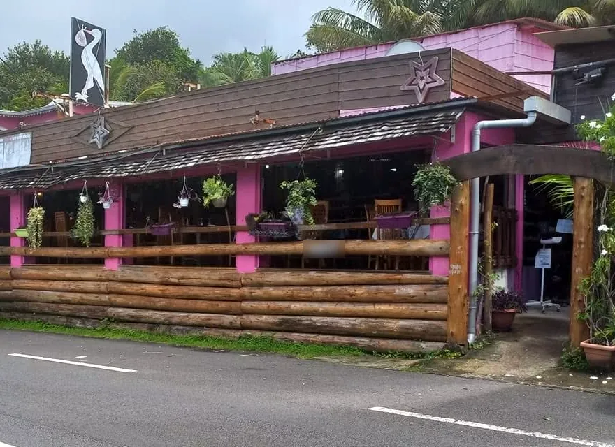
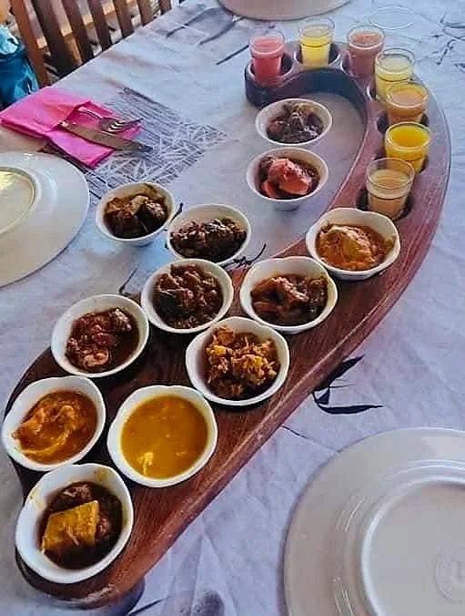
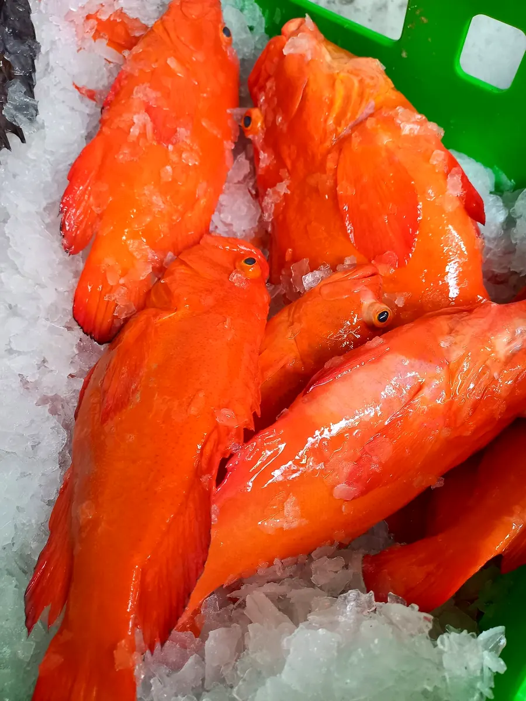
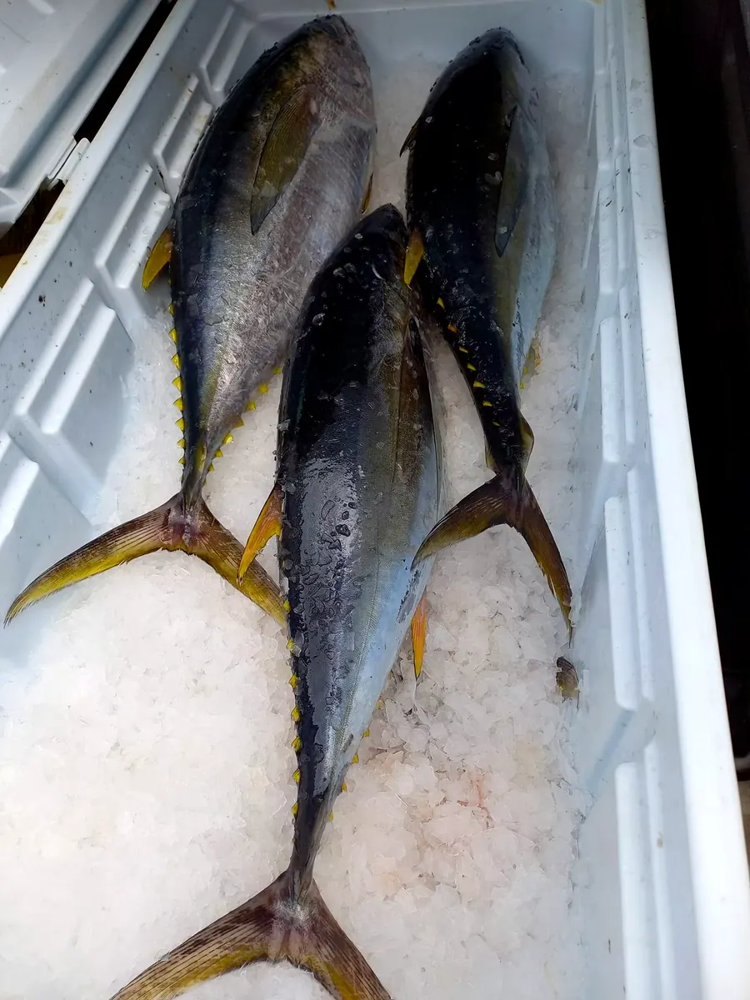
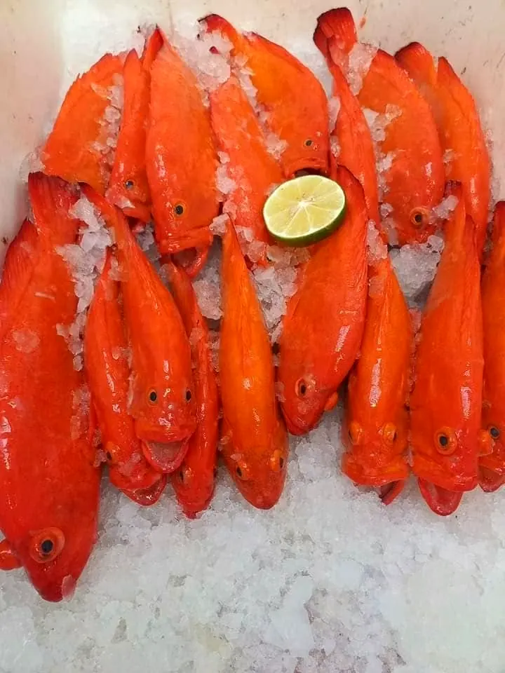
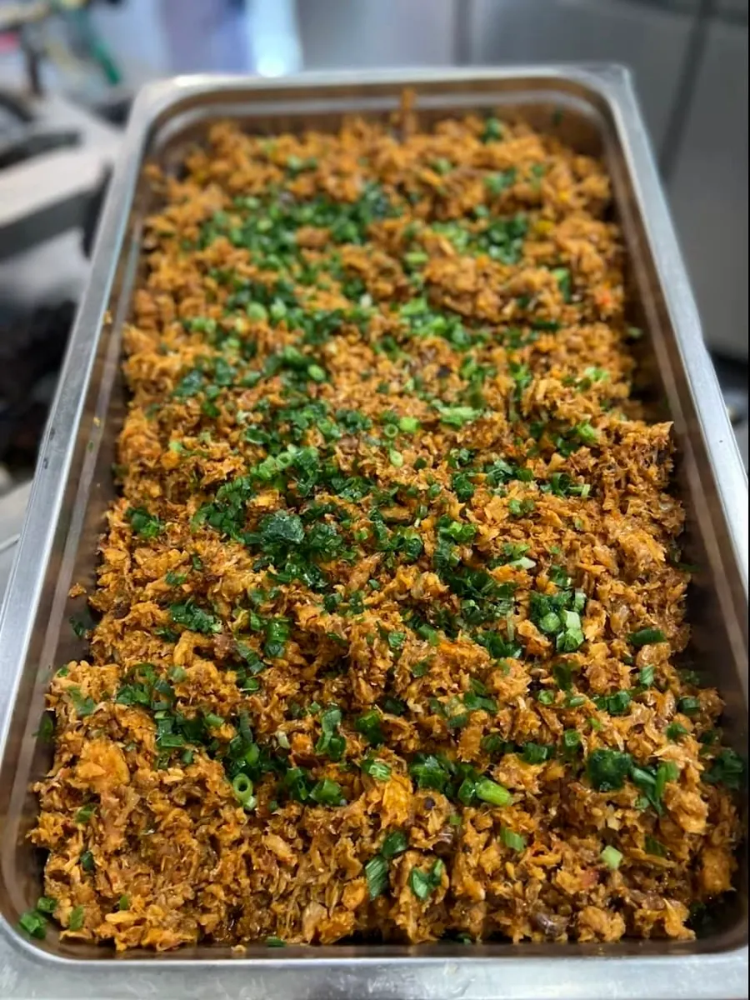
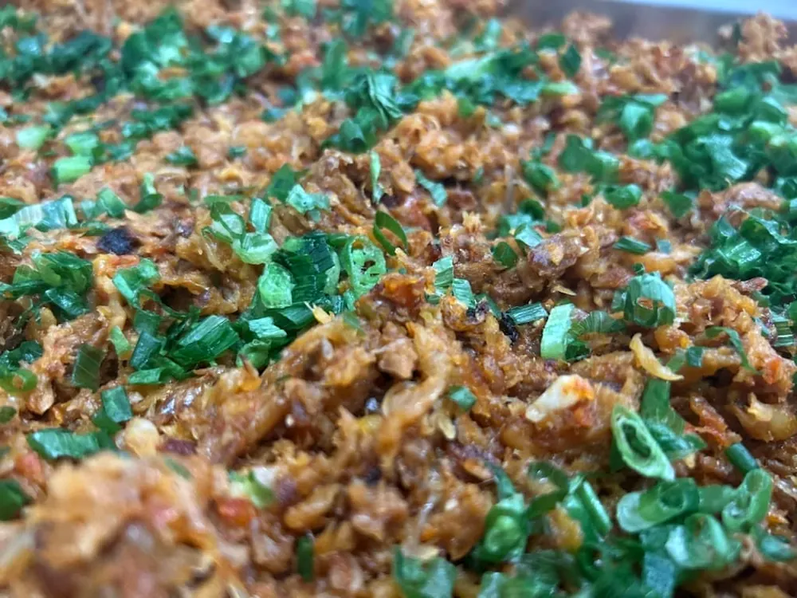

Plateau de dégustation
Le cœur du concept : goûter chaque plat avant de passer commande.
La signature de la maison
Le Tremblet · Saint-Philippe
Restaurant au pied du volcan · Cuisine créole traditionnelle
Ici, on déguste les plats proposés à la carte avant de passer commande, à quelques minutes des coulées de laves.
123 A RN2, Le Tremblet · 97442 Saint-Philippe
Le concept de la maison
« Restaurant au concept unique de déguster les plats proposés à la carte avant de passer votre commande. »La Case Volcan, sur sa page Facebook

Ce que la maison a partagé
« Restaurant proposant des spécialités créoles de l'apéritif au dessert » : voici quelques plats que La Case Volcan a mis à l'honneur sur sa page, en plus de sa carte habituelle.
Le cœur du concept : goûter chaque plat avant de passer commande.
La signature de la maisonPréparé avec le thon frais des arrivages : les « Poissons des laves ».
Publication du 28 mai 2022Un grand classique réunionnais, proposé lors d'une soirée de la case.
Publication du 4 octobre 2022Au menu de la même soirée, en plus des plateaux de dégustation.
Publication du 4 octobre 2022Arrivages
Faites glisser →




La case
Rondins de bois, piliers roses, plantes suspendues et grande salle ouverte sur la route des laves : La Case Volcan vous accueille au Tremblet, à Saint-Philippe, à quelques minutes des coulées.
Une étape parfaite pour une pause créole entre le Grand Brûlé et le Sud sauvage.

Un plateau de dégustation à partager, une table en famille au Tremblet : à Noël, offrez un vrai moment créole à ceux que vous aimez.
Venir à la case
Au bord de la RN2, au Tremblet, à quelques minutes des coulées de laves. Un appel suffit pour réserver votre table.